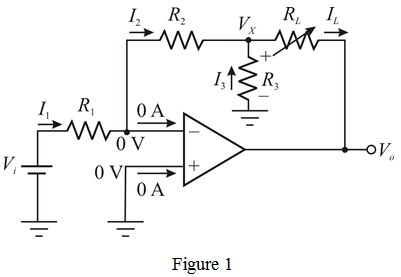

Use Ohm’s law to calculate the value of resistance, .
Substitute  for and
for and  for in the equation.
for in the equation.
Therefore, the value of resistance, is .
Refer to circuit diagram in Figure P2.32 in the textbook.
In an ideal op-amp, the inverting and non-inverting terminal currents are zero, and the inverting and non-inverting node voltages are equal. The modified circuit is shown in Figure 1.

Use Ohm’s law to calculate the value of resistance, .
Substitute for and for in the equation.
Therefore, the value of resistance, is .
Apply Kirchhoff’s current law at inverting node.
Apply Kirchhoff’s current law at node 3.
Substitute for and  for in the equation.
for in the equation.
Assume, the value of resistance, .
Calculate the voltage  using ohm’s law.
using ohm’s law.
Substitute  for
for  ,
,  for in the equation.
for in the equation.
Apply Kirchhoff’s current law at inverting node.
Substitute for , and  for in the equation.
for in the equation.
Therefore, the value of resistance, is .
Calculate the value of load resistance using ohm’s law.
Substitute  for , for
for , for  and
and  for in the equation.
for in the equation.
Therefore, the value of variable resistor, is .
Therefore, the designed resistor values are,
.